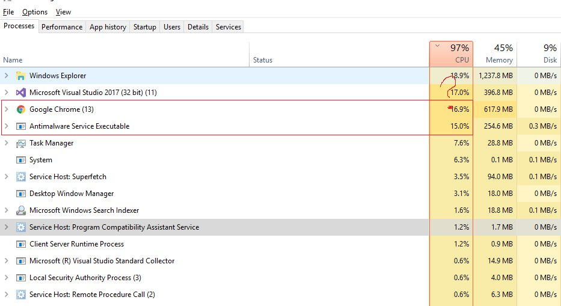
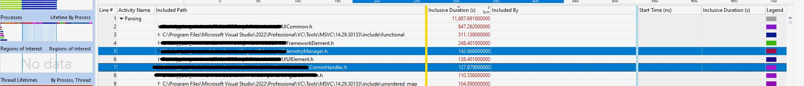
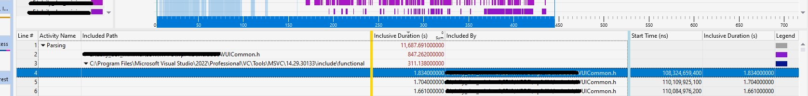
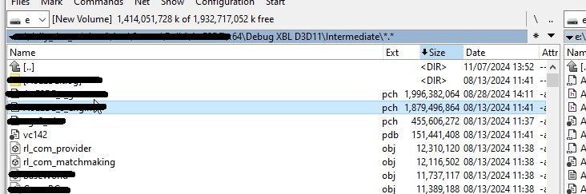

Всегда хотел написать о чём-нибудь лёгком и воздушном, как пишет, например, @antoshkka про userver, или о том, как легко и непринуждённо обернуть какую-нибудь хрень алгоритм в десяток шаблонов, полить это всё std::optional и, попивая кофе, ждать, когда компилятор соизволит это всё пережевать. Но судьба (а не тимлид, нет, как вы могли такое подумать) постоянно подкидывает задачки, где суровые объятия отладчика не отпускают мечтательную душу программера до поздней ночи, да вечная борьба с компилятором рушит все попытки обернуть результат хрени алгоритма в другой десяток шаблонов. На этот раз судьба ясным июньским утром подкинула забавную задачу — время полной сборки бандла подбиралось к двум часам, да собирать бандлы нынче удовольствие не из быстрых, но, посмотрев статистику, стало понятно, что ~55% времени тратится на сборку ресурсов: текстур, моделей, локализацию и т. д. Там есть что чинить, но это царство билд-инженеров. Ещё 30%, или сорок минут, тратится на тесты — теперь всё, что мы насобирали и переконвертили, надо проверить, загрузить, пострелять, побегать, монстров поубивать, BT-шки погонять, с этим пусть QA разбираются. А вот оставшиеся 15%, или около 15 минут, мы занимались «настоящей работой», собирали сердце проекта — бинарь. «Да норм, у нас всегда так, даже на пустом проекте UE», — сказали наши мобильщики и ушли пить кофе на террасу. Но мы же не мобильщики, мы серьёзные AAA-ребята, у нас свой движок и кастомный пайплайн на билдферме. И потом 15 минут — это всё равно много, даже если у тебя 27к файлов в проекте. Айда смотреть, куда время потратили.
Хитрый тимлид
Но сначала с этими вопросами я пошёл к архитекту и техлиду. 15 минут — ну реально много. Техлид ничем не помог, ибо майлстоун и вообще фичи пилить нада, а от архитекта были только вопросы вроде «Репа на SSD?», «А на рам-диске смотрели?», «А что насчёт [вставьте здесь что-то своё]?». И да, в принципе он прав, и нет, я не тестировал ничего из этого, потому что было лень возиться с новой погремушкой и потому что мой домашний питомец из 2.5к файлов собирается за 35±5 секунд с нуля. Экстраполируя эти данные — 27к должны собираться примерно 35 × 10 = 6 минут. А вообще старожилы на проекте говорили, что несколько лет назад проект собирался за 3 минуты, а файлов там было не так чтобы сильно меньше.
15 минут 32 секунды (Чиним паразита)
Наверное, можно попробовать обвинить «жЫрные» шаблоны, компиляторы, медленные компьютеры или Луну не в той фазе. Но самый простой способ выяснить, в чём заключается основная проблема, — это не сразу запускать любимый профайлер (procmon, vcperf, clang-trace — выбери своё) или проводить какие-то безумные научные тесты, как я. Для начала достаточно просто посмотреть на процессы с наибольшей нагрузкой и их время работы на ЦП.
Итак, прежде чем открыть vcperf, я решил заглянуть в task manager и вижу там очень странную картину: студия отжирает себе 17% времени cpu, а ещё браузер, антивирус и explorer. Что-то тут не так, с какого перепугу там вообще светятся все эти товарищи?

Не смотрите, что старенькая студия, — проект прогоняется на нескольких компиляторах.
Chrome. Ладно браузер, это известный пожиратель всего, до чего сможет дотянуться, но тут ничего не поделаешь: либо документация и котики, либо время компиляции, — так и быть, пусть живёт. Обратите внимание, это пока всё очень не научно, я просто исхожу из того, что чем меньше других процессов, тем больше времени достанется компилятору.
Проводник?! Что ты тут вообще делаешь, проводник? Ну, во-первых, это не только инструмент для управления файлами и каталогами, это ещё и оболочка. Если его кикнуть, то исчезнут рабочий стол, пуск и, по сути, всё остальное. Тут только ругать криворуких индусов, которые его так написали. Во-вторых, наш билд поднимал отдельное консольное окно, куда кидал всякое разное во время сборки из пайпа студии и куда могли цепляться другие тулы для анализа, например сборщик ассертов или других внутренних предупреждений о ходе сборки. И, судя по ProcessExplorer, консоль тоже управляется через explorer. Но это не причина: просто выключив эту консоль, получили прирост что-то около 15с. Да, 15с — это много, но это явно не причина.
Visual Studio?! Родная, ты же должна была себе забрать 100% ресурсов и компилить-компилить-компилить.
Ииииииии... Я скомпилииииииииииилааа!
> Build succeeded.
> 0 Error(s)
> Time Elapsed 00:15:32.530Antimalware Service Executable, антивирус, и, как любой антивирус, он будет серьёзно смотреть, что мы делаем, — а мы там плюшками балуемся, перебираем 27к файлов и создаём ещё порядка 60к файлов объектников и временных tmp-файлов. Похоже, доблестные DevOps забыли внести репу в список исключений. Поправим это упущение. Результат: получили примерно 10% ускорение общего времени компиляции. Было 15:32с, стало 14:12с. Приятно, но это явно не серебряная пуля, хотя и маленькая победа.
> Build succeeded.
> 0 Error(s)
> Time Elapsed 00:14:12.240Так, вроде бы ничего больше танцору не мешает, но время компиляции всё равно 14 минут. Открываем vcperf и смотрим, куда уходит время, — а уходит оно на компиляцию и парсинг хедеров. Так появилась идея посмотреть, сколько конкретно времени мы тратим на обработку каждого файла. Полем проверки для последующих изменений стал рабочий проект, целью было сделать время сборки как можно меньше. Возможно, какое-то время тратится на запуск компилятора, но не будем углубляться в этот момент. Так как у нас довольно большая кодовая база, найденные зависимости помогли неплохо снизить время сборки.
! Извините, пути пришлось закрасить. CM не пропустил :(

В результате этой работы получился набор тестов и, как результат, сводная таблица времени сборки заголовочных файлов. Я стараюсь избегать обобщения результатов, потому что эти тесты проводились на одной машине с одной конкретной целью. Поэтому выложу сырые данные для сравнения на нескольких компиляторах MS и Clang (Sony PS5). Это позволяет видеть зависимости в результатах и, надеюсь, будет интересно большинству хабрачитателей.
Результаты по компиляторам
Время обработки заголовка, секунды:
Header VS17 VS19 clang (16.0)
algorithm 0.169 0.191 0.316
array 0.184 0.253 0.106
atomic 0.326 0.405 0.659
bitset 0.329 0.415 0.527
cassert 0.010 0.009 0.017
chrono 0.144 0.195 0.306
climits 0.010 0.009 0.018
cmath 0.036 0.045 0.084
condition_variable 0.286 0.372 0.510
cstdint 0.011 0.009 0.018
cstdio 0.143 0.143 0.173
deque 0.183 0.216 0.439
filesystem 0.383 0.516 0.289
forward_list 0.183 0.214 0.338
fstream 1.271 1.331 1.476
functional 0.287 0.222 0.561
future 1.059 1.317 2.474
initializer_list 0.011 0.013 0.022
ios 0.259 0.318 0.456
iosfwd 0.080 0.094 0.172
iostream 2.264 2.325 3.464
istream 1.264 1.324 1.463
iterator 0.265 0.327 0.468
list 0.183 0.214 0.338
map 0.194 0.231 0.863
memory 0.173 0.200 0.324
mutex 0.280 0.364 0.598
ostream 1.261 1.321 0.459
queue 0.198 0.235 0.374
random 0.305 0.394 0.553
regex 2.392 1.505 1.634
set 0.185 0.217 0.341
sstream 0.329 0.416 0.528
stack 0.186 0.216 0.341
string 0.327 0.413 0.523
thread 0.227 0.289 0.448
tuple 0.123 0.163 0.263
type_traits 0.043 0.060 0.096
typeinfo 0.051 0.068 0.107
unordered_map 0.204 0.445 0.184
utility 0.098 0.127 0.212
vector 0.285 0.217 0.244
windows.h 4.423 4.517 7.038Вы, наверное, заметили, что большинство тяжёлых для компиляции хедеров (за исключением windows.h и iostream) — а они реально тяжёлые, если время на их обработку больше 100 мс, — это шаблоны.
Header VS17 VS19 clang
algorithm 0.169 0.191 0.316
array 0.184 0.253 0.106
atomic 0.326 0.405 0.659
bitset 0.329 0.415 0.527
iterator 0.265 0.327 0.468
vector 0.285 0.217 0.244Шаблоны — одна из самых любимых мной возможностей C++, позволяющая мне писать так, как я хочу, а не так, как этого требует стандарт. Шутка! Но, блин, почему они настолько медленные? Что там в array такого, что оно компилится 200 мс, — там же просто обёртка над массивом. Заголовочный файл с шаблонами может быть включён только один раз, но реализация компилируется для каждой комбинации аргументов для каждого юнита компиляции. И дорогие шаблоны могут значительно увеличить время компиляции, что мы, собственно, и получили у себя. Возможно, там какие-то проблемы с инстанцированием, память на стеке разместить, проверки разные. Или вот вектор — тоже вроде ничего сложного быть не должно, но тоже 200 с лишним мс на всех компиляторах.
Я посмотрел на godbolt (/d1reportTime, пример; clang такого, к сожалению, не умеет), сколько занимает время компиляции каждой функции vector:
std::vector<int>::_Construct_n: 0.000566s
std::vector<int>::vector: 0.000564s
std::vector<int>::_Tidy: 0.000341s
std::vector<int>::_Buy_raw: 0.000262s
std::_Compressed_pair<...>::_Compressed_pair: 0.000248s
std::vector<int>::max_size: 0.000244s
std::_Vector_const_iterator<...>: 0.000295s
std::_Vector_iterator<...>: 0.000184s
std::_Vector_val<...>: 0.000096s
std::vector<T, Alloc>: 0.001980s
std::vector<int>: 0.002384s
std::allocator_traits<std::allocator<int>>: 0.000518s
std::_Default_allocator_traits<...>: 0.000451s
std::allocator<int>: 0.000265s
std::_Compressed_pair<...>: 0.000274s
std::_Vector_val<std::_Simple_types<int>>: 0.000145s
std::_Simple_types<int>: 0.000035s
...
∑ vector: 0.326898sЭто крошечные времена. Они даже особо не важны, правда? Кому важен процесс компиляции std::vector<>::max_size -> 0.000169s, если он занимает две десятых миллисекунды? Это настолько несущественно, чтобы волноваться…
14 минут 12 секунд (Мучаем шаблоны)
> Build succeeded.
> 0 Error(s)
> Time Elapsed 00:14:12.240
Волноваться стоит, если у вас 27к файлов в проекте. 27k × 0.326 = 8 880 секунд — почти три часа :) Хорошо, что у нас вектор не в каждом файле используется. 14 минут, конечно, не три часа, но тоже много, давайте смотреть, как уменьшить это время. Стоимость использования шаблона состоит из двух вещей: время на парсинг заголовочного файла #include и время на инстанцирование шаблона для заданного типа. Когда обрабатывается юнит компиляции (файл .cpp), препроцессор загружает каждый заголовочный файл, который он находит в директивах #include этого файла и всех последующих хедеров. Заголовочные файлы обычно имеют защиту от рекурсии (include guards), чтобы предотвратить повторную загрузку, поэтому каждый заголовок обычно загружается только один раз (обычно, потому что всё равно можно словить скрытую рекурсию).
В отличие от кода без шаблонов, каждое инстанцирование, обращение и даже указатель на шаблонный класс требует компиляции всех его использованных и разыменованных членов. VS позволяет более вольно обращаться с этим правилом, но clang требует инстанцирования всего шаблона, а не только его частей.
В случае с большой иерархией включений, например мегазаголовки, это может означать сотни (СОТНИ!) уникальных типов вектора в одном юните компиляции. Спасения здесь нет: даже то, что компилируются только те вещи, которые действительно используются, позволяет порезать время на проценты, но не в разы. Так что если, например, метод std::vector::push_back никогда не вызывается и не компилируется, он всё равно будет распаршен компилятором каждый раз и подготовлен для компиляции. А почему? А вот! Сделано это было для ускорения сборок: если такой метод уже есть в кеше компилятора, то его подготовка занимает меньшее время. И ребята из МС и кланга дружно подумали: а давайте мы будем заранее класть все встречающиеся методы в кеш, авось понадобятся.
Если используются 50 различных типов шаблонов вектора, то стоимость компиляции этих шаблонов оплачивается 50 раз. И это только для одной единицы трансляции, следующая единица трансляции снова платит за всё это. !Профит. Давайте попробуем это исправить.
Forward Declaration
Если это возможно, надо использовать forward declarations. Это устраняет включение заголовочного файла, стоимость компиляции шаблона для конкретного типа. Не делать ничего — это лучшая оптимизация из тех, что я могу посоветовать. Шаблоны можно объявлять заранее, но тогда шаблон должен быть объявлен в хедере только через указатель или ссылку и никогда не должен быть разыменован. Типы параметров шаблона также должны быть либо предварительно объявлены, либо полностью определены.
Иногда надо понять, что именно занимает время. Тут поможет флаг /d1reportTime компилятора для VS; на тестах мне иногда приходилось компилировать по одной строке за раз с минимальными изменениями и фиксировать время, которое было нужно компилятору, а потом думать, почему то или иное изменение приводит к росту времени компиляции. Se la vi, как говорится ¯\_(ツ)_/¯. Это, конечно, смешно было — ловить блох, но вот вам пример:
void vector<_TYPE_>::preallocate(const size_t count) {
if (count > m_capacity) { // 0.000023s
_TYPE_ * const data = static_cast<_TYPE_*>
(malloc(sizeof(_TYPE_) * count)); // 0.000076s
const size_t end = m_size; // 0.000028s
m_size = std::min(m_size, count); // 0.000402s
for (size_t i = 0; i < count; i++) { // 0.000042s
new (&data[i]) _TYPE_(std::move(m_data[i])); // 0.000148s
}Заметили что-нибудь необычное? А если так?
void vector<_TYPE_>::preallocate(const size_t count) {
if (count > m_capacity) { // 0.000023s
_TYPE_ * const data = static_cast<_TYPE_*>
(malloc(sizeof(_TYPE_) * count)); // 0.000076s
const size_t end = m_size; // 0.000028s
if ( count < m_size ) { m_size = count; } // 0.000012s
for (size_t i = 0; i < count; i++) { // 0.000042s
new (&data[i]) _TYPE_(std::move(m_data[i])); // 0.000148s
}Избыточность шаблонов
Дублирования в шаблонах достаточно много, но именно поэтому это и называется шаблоном: добавляя избыточность в одном файле, мы убираем её во всех остальных местах и платим за это временем компиляции. Каждый раз, когда шаблон инстанцируется с новым типом, все использованные члены компилируются заново, с единственным отличием — с другим типом. Ктор, дтор, копирование, операции перемещения, но остальная часть кода остаётся идентичной. И чем больше методов класса, тем дороже инстанцирование шаблона. А если ещё появляются шаблонные функции шаблонного класса, время начинает лететь в космос! Каждая пустая шаблонная функция стоит около 0.000030 секунды на компиляцию, и это ещё до того, как в неё будет добавлен какой-либо код. Помещая вызов одной шаблонной функции в другую, мы сильно увеличиваем время компиляции, и оно очень нелинейно меняется.
Здесь важно понимать, что хотя оптимизация шаблонных функций может привести к небольшим улучшениям, она не всегда будет лучшим решением, поскольку сама природа шаблонов приводит к значительным затратам на компиляцию из-за множества уникальных инстанцирований. В данном случае нужно искать способы минимизировать количество инстанцирований или сократить количество шаблонных функций, которые компилятор должен обработать.
Анализ зависимостей и растаскивание иерархий хедеров позволили сэкономить три минуты, время сборки проекта стало 11:25с. На всю эту работу, протаскивание этих задач через таски ушло пару месяцев рабочего времени: проект большой, за раз всё не починишь, плюс приходится согласовывать свои изменения с другими командами. Но результаты были видны, и поэтому решили эту работу продолжить.
11 минут 25 секунд (Готовим precompiled headers)
> Build succeeded.
> 0 Error(s)
> Time Elapsed 00:11:25.210Про include guards, я думаю, вы все знаете, иначе бы не пришли читать эту статью :)
Дальнейшее растаскивание хедеров не давало уже существенных результатов, ±5 секунд к времени билда не считаются. Если вы заметили, то на предыдущем скрине functional был во многих вызовах файлов. Это значит, что проекту пришло время начать использовать PCH. Эта оптимизация была включена для большинства проектов, но для некоторых его частей выключена специально. Так как в тот код мне лезть не разрешили, особо там никакого прироста получить не удалось, тем не менее минуту на существующем конфиге тоже сэкономили.
Как работают PCH
Если говорить в общих чертах, PCH создаётся путём компиляции исходного файла (*.cpp) с использованием специфичных для компилятора флагов. Когда заголовочные файлы из иерархии включений обрабатываются, они проходят через препроцессор как обычно, но их бинарный результат сохраняется на диск. Когда этот PCH используется в другом файле, его представление загружается, что позволяет пропустить многие шаги обработки и сэкономить время.
Преимущества PCH заключаются в том, что они позволяют значительно ускорить время компиляции, особенно при многократном включении одних и тех же заголовочных файлов в разных единицах трансляции. Например, если вы часто используете стандартные заголовочные файлы или системные библиотеки, предварительная компиляция этих файлов в PCH может существенно сэкономить время.

Недостаток PCH — это довольно дорогая операция, которая часто требует гораздо больше времени, чем преимущества, которые она приносит. Каждое изменение в любом из заголовочных файлов, входящих в PCH, приводит к его пересборке. Второй неочевидный недостаток: если вы включите слишком много хедеров, начнут влиять уже чисто физические особенности работы с файлами — на скрине ниже наш общий PCH-файл перевалил за 4Гб. Я не знаю, что там студия такого делает, чтобы получить такие объёмы, но загрузка такого объёма стала просто долгой по времени и съела все преимущества. В итоге пришлось разделить проекты и каждому сделать свой отдельный PCH-файл. Заодно получилось почистить сами PCH-конфиги и снизить их объём до 1ГБ каждый, это позволило сэкономить ещё где-то минуту с хвостиком.
10 минут 13 секунд (Упрощаем зависимости)
> Build succeeded.
> 0 Error(s)
> Time Elapsed 00:10:13.410Чем больше заголовочных файлов включается, тем дольше происходит компиляция. Заголовок, который включает всё подряд, начинает тормозить всё вокруг вас. Системные заголовки закончились, и мы стали смотреть уже на время компиляции файлов движка и игры. Одним из решений стало использовать глобальные хедеры с объявлением основных типов, которые используются. Это позволило не только упростить внутреннюю иерархию заголовков, но и существенно порефакторить зависимости между модулями, которые и приводили к беспорядочным включениям. А заодно найти проблему с включением windows.h в некоторых файлах, откуда он пролезал по всему проекту и увеличивал время компиляции. Избавление от сверхсвязанности в иерархии объектов и включения windows.h позволило сэкономить ещё секунд 40.
9 минут 31 секунда (Оживляем PIMPL)
> Build succeeded.
> 0 Error(s)
> Time Elapsed 00:09:31.350В C++ доступ к приватным членам класса получить несложно (тут), хотя они и скрыты от внешнего кода. Компилятор лишь немного усложняет доступ к ним, однако для внешнего кода иногда необходимо знать о приватных переменных, например чтобы определить размер и выравнивание объекта. Часто классы включают приватные функции и данные, хотя на самом деле они в хедере не нужны или вообще вредны и тянут за собой другие хедеры. Если данные или функции используются только в реализации, то можно сделать их видимыми только в этом модуле, что приводит к нескольким преимуществам:
- меньше работы для препроцессора — минимизация заголовков;
- снижение времени линковки — меньше символов в глобальных таблицах символов.
Метод PIMPL (Pointer to Implementation — указатель на реализацию) помогает скрыть данные и функциональность, уменьшая изменения в публичных заголовочных файлах, что, в свою очередь, уменьшает время компиляции. Этот подход помогает «закрыть» детали реализации от внешнего мира, но имеет свои недостатки в виде дополнительных расходов на выделение памяти и обращение по указателю. Но в определённых реализациях, где перф не стоит на первом месте, мы можем позволить себе развязать зависимости там, где это не получается через forward declaration. Получилось не супер красиво, но позволило сэкономить ещё 20 секунд. Решение получилось спорным, поэтому решили дальше его не развивать.
9 минут 12 секунд (Отключаем анализаторы)
> Build succeeded.
> 0 Error(s)
> Time Elapsed 00:09:12.130Это ужасное предложение, не делайте так! Но если вас действительно беспокоит время компиляции, отключите анализ кода. Анализ значительно замедляет сборку… ооочень сильно. В нашем случае это занимало почти полторы минуты. Не делайте этого на своих проектах без весомых причин. Правильный код — это проверенный код, всем чем только можно: матрицей компиляции, десятком анализаторов и парочкой мудрых лидов. Неправильный код — весь остальной, быстро, но бесполезно и с ошибками. В итоге мы решили это на организационном уровне: PR запускались без анализатора кода, если PR компилился нормально и проходил минимальные тесты, то он уходил в дев, а билдферма запускала второй такой же, но уже с включённым анализом.
7 минут 34 секунды (Отключаем юнит-тесты)
> Build succeeded.
> 0 Error(s)
> Time Elapsed 00:07:34.440И вот мы пришли почти к 7 минутам — это хорошее время компиляции для большого проекта из почти трёх десятков тысяч файлов. Анализируя время, которое было потрачено на компиляцию, стало понятно, что наш разросшийся с прошлого апдейта игры блок тестов, который на тот момент достиг почти 3к различных проверок, занимает почти минуту времени на сборку. Тесты эти не нужны в повседневной сборке, и обычный разработчик их никогда не запускал, а время они тратили. Поэтому с ними поступили так же, как с анализом кода, — вынесли в отдельный шаг на билдферме после прогона PR.
6 минут 22 секунды (Отключаем LTO)
> Build succeeded.
> 0 Error(s)
> Time Elapsed 00:06:22.240Link Time Optimization (LTO) — это технология оптимизации, которая выполняется на этапе линковки приложения. Компилятор может оптимизировать код на уровне отдельного файла, но при использовании LTO компилятор анализирует сразу всю программу целиком. Это позволяет устранить неиспользуемые функции, более эффективно выстроить порядок вызовов и минимизировать накладные расходы. LTO разделяются на полное LTO (Full LTO) и Thin LTO. Thin LTO — это вариант, специально разработанный для ускорения линковки больших проектов: весь проект бьётся на несколько частей, и оптимизация проводится параллельно в каждой. LTO значительно увеличивает время компиляции, в нашем случае это занимало минуту с хвостиком для ThinLTO, почти две минуты для Full. Full LTO по бенчмаркам давало прирост около 4%, ThinLTO — около 3%; полное оставили только для QA-билдов, а всем остальным включили побыстрее. Итого ещё минус минута на сборке.
5 минут 16 секунд (Финиш)
> Build succeeded.
> 0 Error(s)
> Time Elapsed 00:05:16.740Итак, финальное время сборки — пять минут с хвостиком, считаю, неплохо получилось. Не всё, конечно, удалось решить только изменением в проекте, но пять минут — это пять минут: чашка кофе с круассаном, а не банка пива с бутером. В общем, как обычно, потихоньку придумывали себе проблемы, а потом мужественно их чинили.
З.Ы.
Compiler Diagnostic. Для Microsoft Visual Studio существуют флаги, которые предоставляют информацию разной степени полезности:
/Bt+— сообщает время компиляции front- и back-части компилятора для каждого файла. C1XX.dll — это front-часть компилятора, которая отвечает за компиляцию исходного кода в промежуточный язык (IL). Время компиляции на этом этапе обычно зависит от времени работы препроцессора (включения, шаблоны и т. д.). C2.dll — это back-часть компилятора, которая генерирует объектные файлы (преобразует IL в машинный код)./d1reportTime— сообщает время работы front-части компилятора, доступно только в Visual Studio 2017 Community или более новых версиях. (Спасибо @phyronnaz и @aras_p.)/d2cgsummary— сообщает о функциях, которые имеют «аномальные» времена компиляции. Это полезно, попробуйте использовать.
Комбинирование этих флагов в Visual Studio предоставляет много информации о том, куда уходит время компиляции. Для clang есть флаг -ftime-report; советую посмотреть этот пост — он довольно старый, но принципиально ничего не поменялось.
Если у вас есть дополнения и предложения — пишите в комментах. ccache/ram-disk не предлагать: дорого, много возни и мало профита.
Спасибо, что дочитали!
← Все статьи